Our Vision
To be the construction partner textile and factory owners in Surat turn to for practical planning, clear scope and buildings that support production.
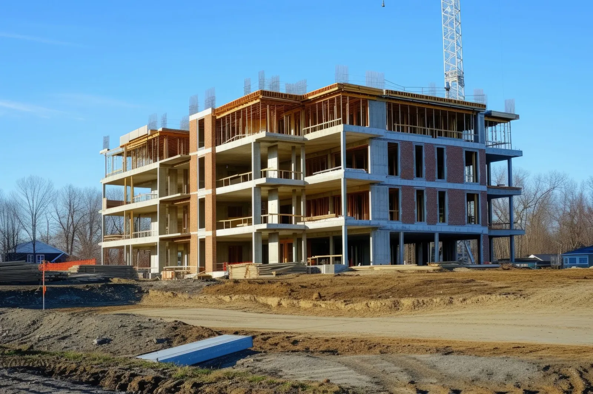

Prachi Construction Projects is based in Mota Varachha, Surat, Gujarat, and focuses on textile and industrial buildings. We build gala units, airjet and waterjet loom sheds, machine foundations, processing-house civil work and industrial sheds; call +91 76004 90851 to discuss your scope. See our textile construction services.
We start from what the building must do: where the machines sit, how materials move, where water and power routes run and what the floor must carry. Drawings, site conditions and the production sequence shape the estimate and the programme.
As a labour & material contractor, we supply workers and materials under one contract. Equipment for regular site work is listed below; any additional machinery is arranged as the scope requires. [CONFIRM WITH OWNER: owned vs rented equipment]
What we work towards on every project.
To be the construction partner textile and factory owners in Surat turn to for practical planning, clear scope and buildings that support production.
To plan and build textile and industrial units from agreed drawings, with written scope, suitable materials and regular updates so you know where your project stands.
The principles behind every project we take up.
Scope, materials and costs are written down so there is no confusion later.
Material storage, machine movement and work areas are planned around an active site. [CONFIRM WITH OWNER: site safety rules and responsibility]
Foundations, floors, drains and finishes are checked against the agreed drawings.
We work to the approved scope and keep changes, costs and programme visible.
We review machine layouts, utilities and access early to reduce changes during construction.
Site crews coordinate with designers, suppliers and other trades working on your unit.
Equipment used for regular civil work on textile and industrial sites; additional machinery is arranged when the scope needs it. [CONFIRM WITH OWNER: owned vs rented equipment]
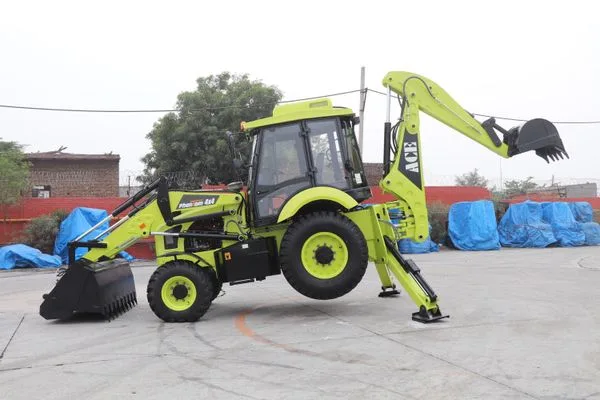
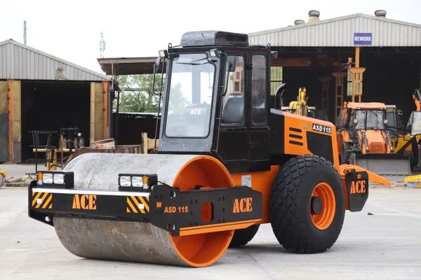
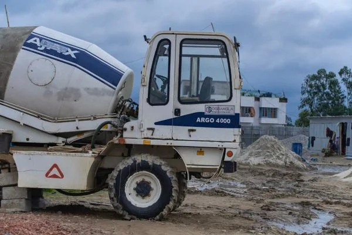

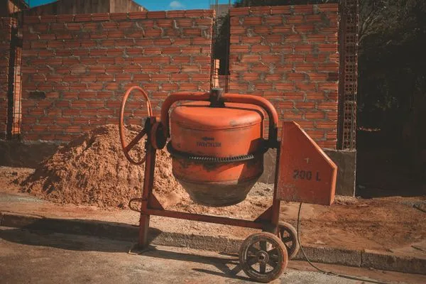
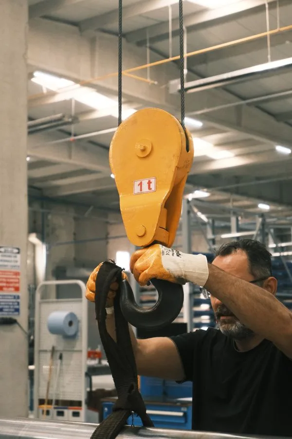
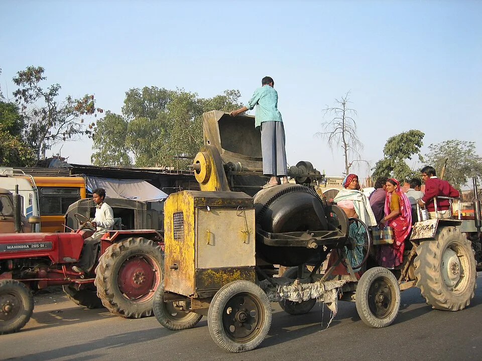
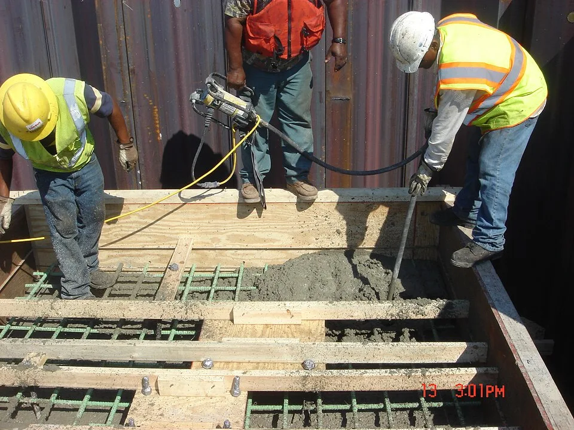
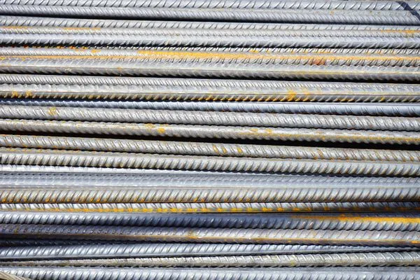
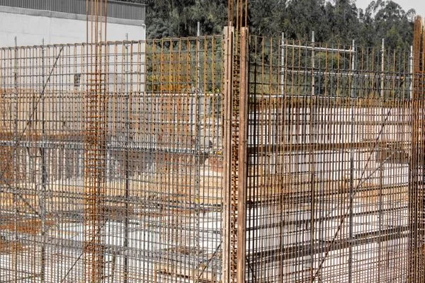
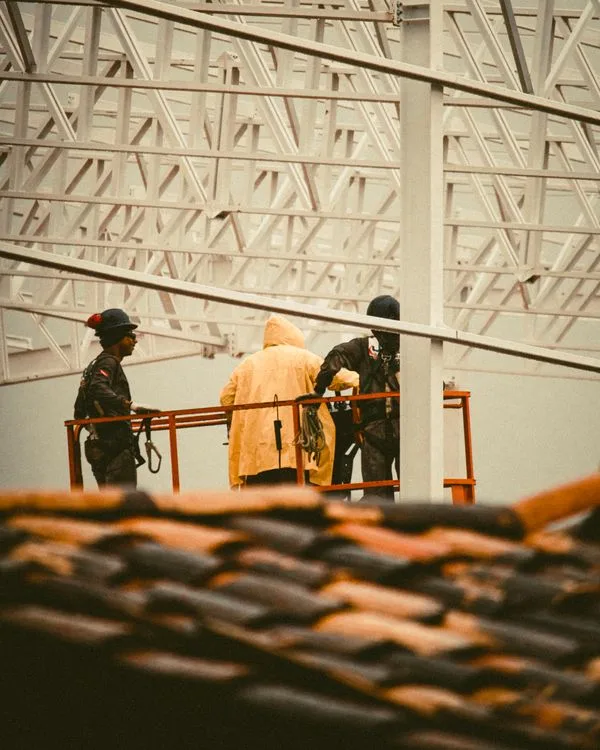

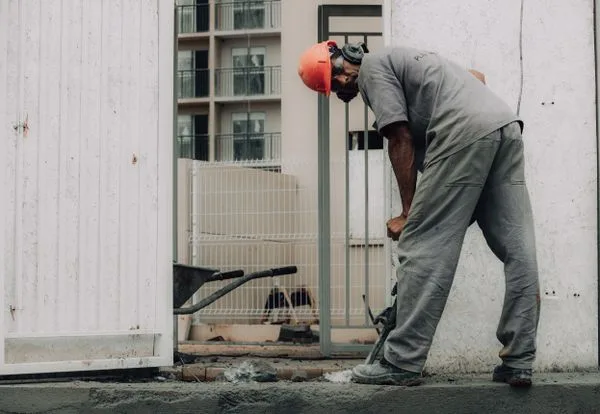
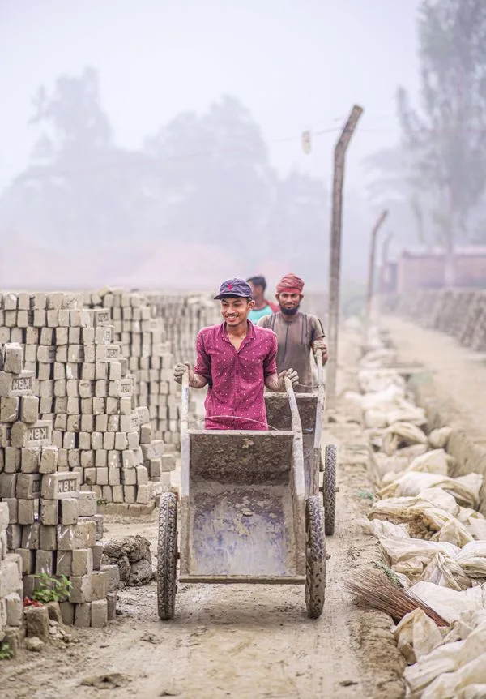
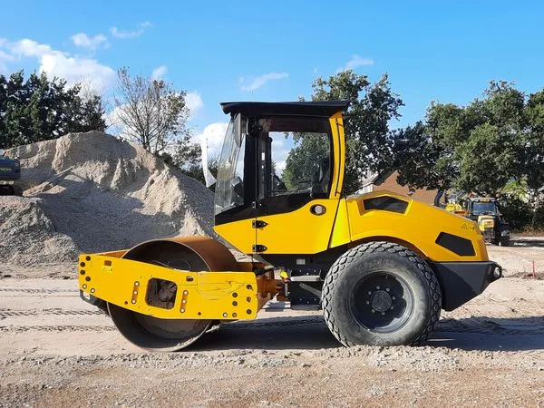
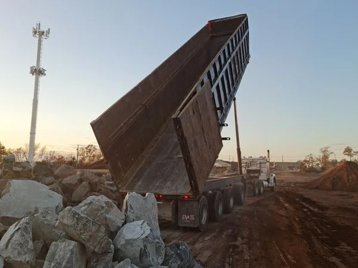
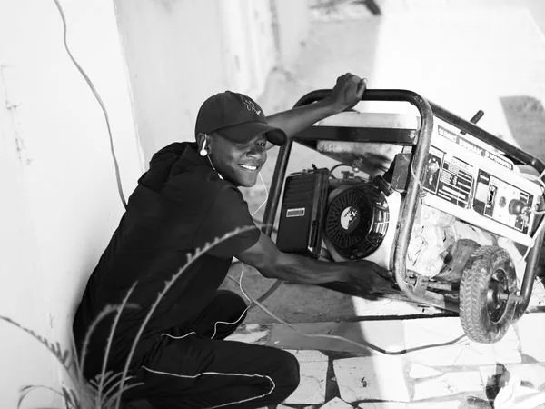
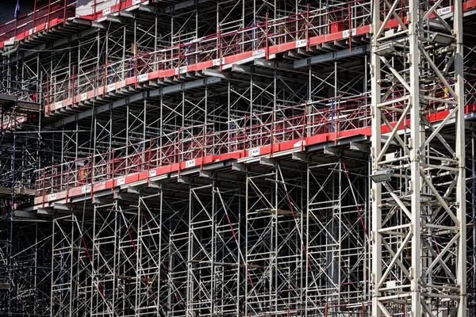
For larger textile and industrial projects, extra heavy machinery can be arranged on rent as needed, subject to scope and availability.
A clear process for gala units, loom sheds, foundations and factory buildings — from first call to handover. See the project portfolio for the categories we cover.
We review your machine list, drawings, plot and intended production use.
We check access, levels, drainage and space for material and machine movement.
Grid, foundations, utility routes and floor build-up are planned together.
You receive a written scope, material list and programme before work starts.
Materials and site equipment are arranged to suit the construction sequence.
RCC, flooring, drains and finishes are built with close coordination.
Levels, anchors, finishes and drain falls are checked as work progresses.
Finished civil work is handed over with the snag points closed.
Feedback from clients we have worked with.
[CONFIRM WITH OWNER: verify or replace these testimonials with real textile/industrial client quotes and written permission.]
Share your machine layout and plot details for a practical discussion on scope, sequencing and estimates.